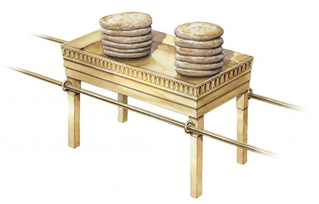
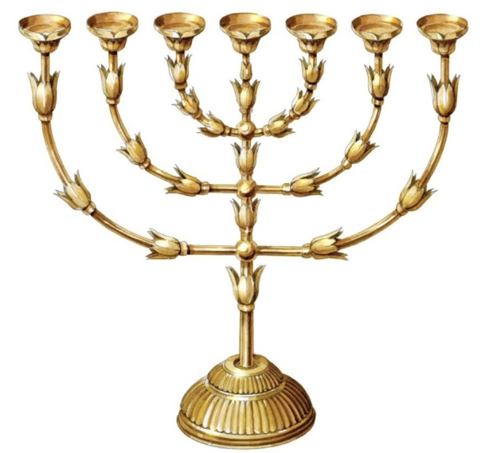

2 「你告訴以色列人當為我送禮物來；凡甘心樂意的，你們就可以收下歸我。

奉獻是「甘心樂意」的。神並不勉強人，只有「甘心樂意」地奉獻恩典的一部分，神才同意「可以收下歸我」。因為「甘心樂意」的奉獻表明人心思的回轉，不但承認神是配得的，也認識自己的一切所有都是出於恩典，所以能帶著感恩的心順服神的權柄，「甘心樂意」地「將身體獻上，當作活祭」（羅十二1），這樣的奉獻才「是聖潔的，是神所喜悅的；你們如此事奉，乃是理所當然的」。人若是以施捨、捐助、幫忙、勉強、計較的心態來奉獻和事奉，神是不會悅納的。其實以色列人奉獻的，是上帝為他們預備的，從埃及地帶出來的。
4 藍色、紫色、朱紅色線，細麻，山羊毛，
5 染紅的公羊皮，海狗皮，皂莢木，
6 點燈的油並做膏油和香的香料，
7 紅瑪瑙與別樣的寶石，可以鑲嵌在以弗得和胸牌上。
8 又當為我造聖所，使我可以住在他們中間。
9 製造帳幕和其中的一切器具都要照我所指示你的樣式。」
紫色」原文是「紫紅色」，是推羅人從地中海的染料骨螺中提取的骨螺紫，又被稱為推羅紫或皇家紫，接近深紫紅色，穩定持久，會隨著風化和日照變得更加鮮亮。「紫色」非常貴重，是當時社會權力、財富和地位的象徵。
舊約的帳幕就是會幕，在新約就是教會。
11 要裡外包上精金，四圍鑲上金牙邊。
12 也要鑄四個金環，安在櫃的四腳上；這邊兩環，那邊兩環。
13 要用皂莢木做兩根槓，用金包裹。
14 要把槓穿在櫃旁的環內，以便抬櫃。
15 這槓要常在櫃的環內，不可抽出來。
16 必將我所要賜給你的法版放在櫃裡。
18 要用金子錘出兩個基路伯來，安在施恩座的兩頭。
19 這頭做一個基路伯，那頭做一個基路伯，二基路伯要接連一塊，在施恩座的兩頭。
20 二基路伯要高張翅膀，遮掩施恩座。基路伯要臉對臉，朝著施恩座。
21 要將施恩座安在櫃的上邊，又將我所要賜給你的法版放在櫃裡。
「基路伯」是一種天使（創三24）。當人被趕出伊甸園以後，神安排了基路伯「把守生命樹的道路」（創三24），現在這兩個基路伯也在看守神的律法和恩典。如果神自己不顯出恩典，就沒有人能滿足律法的公義，沒有人能得著神的恩典。施恩座之所以能流出恩典，是因為祭牲的血彈在上面（利十六14-15），這兩個基路伯「也詳細察看」（彼前一12）那能顯明恩典的根據。只有基督在十字架所流的寶血，才能叫神的恩典臨到人，叫罪得以赦免。
24 要用純金包裹，並在周圍鑲上金邊。
25 桌子的周圍要加上七十五公釐寬的邊緣，邊緣要鑲上金邊。
26 要做四個扛抬用的金環，安在桌子四角的腳上。
27 金環要靠近邊緣，好讓扛抬桌子的槓穿過。
28 槓子要用金合歡木製成，用金包裹。
29 要用純金造桌上的盤子、碟子，以及奠酒用的壺和杯。
30 桌子要安置在約櫃前，桌上經常陳設獻給我的供餅。」
 
33 每一根都有三朵花，形狀像杏花，有萼和瓣。
34 燈臺的柱有四朵花，形狀像杏花，有萼和瓣。
35 三對枝子的每一對下面有一個萼。
36 花萼、枝子，和燈臺都要一整塊純金鎚出來的。
37 要為燈臺做七盞燈，燈盞都向前面照射。
38 要用純金造燈花剪刀和燭盤子。
39 要用三十五公斤的純金造燈臺和一切器具。
40 要謹慎，按照我在山上指示你的樣式造。」
也為OOO禱告：求祢使OOO在工作中，在做OOO決定時，內心被你光照，有屬靈的智慧，叫OOO所作的盡都順利。